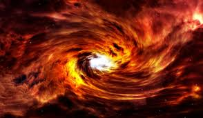
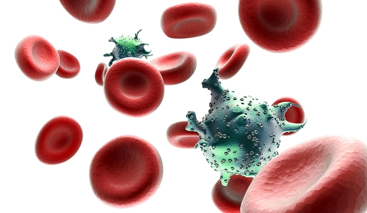
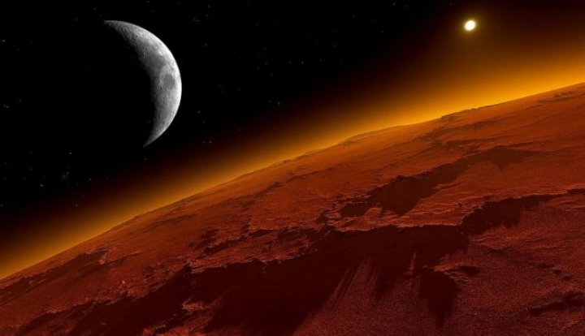

Va fi oare posibil sa trecem prin ziduri? Sa construim nave cosmice care sa se deplaseze mai rapid decat lumina?
Sa citim gandurile altor oameni? Sa devenim invizibili? Sa mutam obiectele din loc cu puterea mintii noastre? Sa ne transportam
trupurile instantaneu prin spatiul cosmic?
Michio Kaku este profesor de fizica teoretica al catedrei Henry Semat de la Graduate Center,
City University din New York. Este cofondator al teoriei corzilor. A scris mai multe carti, printre care Lumi paralele
si Dincolo de Einstein
"Cea mai recenta carte a lui Michio Kaku, Fizica imposibilului, vrea sa explice exact de ce unele viziuni ale viitorului se pot pana la urma realiza,
in timp ce altele vor ramane in limitele posibilului... SF-ul trateaza astfel de chestiuni; stiinta ramane tacuta in aceasta privinta.
Lucrarea domnului Kaku vine sa umple un gol." - The Economist
Richard Clayderman lanseaza productia "From Paris with Love", in premiera mondiala, la Bucuresti
Richard Clayderman, faimosul pianist de origine franceza, si-a petrecut intreaga viata in spatele clapelor, dobandind cunostiintele
de la tatal sau, a carui profesie era chiar profesor de pian. Dupa numeroase incercari si dificultati financiare,
Clayderman a reusit sa se afirme pe plan international ca un pianist valoros, cea mai de seama piesa a sa fiind "Ballade pour Adeline".
Pianistul Richard Clayderman revine la Bucuresti pentru un concert la Sala Palatului, pe 26 martie 2015.
Concertul din Capitala va marca premiera mondiala a spectacolului "From Paris with Love"
Theory of Everything descrie relatia dintre Hawking si sotia sa, Jane. Cei doi s-au cunoscut pe cand erau studenyi la Cambridge in anii '60, exact in vremea in
care viitorul mare om de stiinta incepea sa sufere consecintele afectiunii care l-a paralizat, fortandu-l sa traiasca intr-un scaun cu rotile si
sa se exprime cu ajutorul unui computer sofisticat, conceput special pentru el de catre un prieten..
Filmu ruleaza in cinematografele romanesti incepund cu data de 22 Februarie 2015
Oamenii de stiinta au facut micile rozatoare sa creada ca, in trecut,
au primit socuri electrice in picioare in timp ce se aflau intr-o cutie de mici dimensiuni, chiar daca acest lucru nu s-a intamplat niciodata.
Drept urmare, de fiecare data cand expertii asaza soarecii in cutiile respective, animalele raman
imediat nemiscate, acesta fiind un raspuns tipic al rozatoarelor la sentimentul de frica.
Experimentul oamenilor de stiinta reprezinta o baza pentru o cercetare mult mai amanuntita, folosindu-se tot de soareci. In viitor,
asemenea studii ar putea duce la o intelegere mai buna asupra modului in care
se formeaza memoria falsa la oameni, sustine Susumu Tonegawa, conducator al studiului si castigator al
Premiului Nobel pentru cercetare in sistemul imunitar.
Einstein, inca o data confirmat: energia neagra exista de-a lungul intregului Univers!

Albert Einstein avea dreptate: energia intunecata este constanta in univers si continua sa se extinda.
Un nou studiu arata ca energia intunecata exista si determina expansiunea atat a timpului cat si a universului. Cercetarea a fost facuta
de o echipa formata din 26 oameni de stiinta, printre care si Dr. Chris Blake de la Universitatea Swinburne din Melbourne,
fiind prima confirmare independenta atat a existentei energiei negre, cat si a nivelului de expansiune.
"Se dovedeste ca Einstein a avut dreptate: energia intunecata este, mai degraba, o constanta
cosmologica a universului, decat o schimbare a legii gravitationale", afirma Blake
Oamenii de stiinta au vindecat 14 adulti infectati cu HIV!

La doar o saptamana dupa ce oamenii de stiinta au anuntat ca un bebelus a fost vindecat de HIV, un nou raport
sugereaza ca adultii pot fi vindecati la randul lor folosind un tratament similar. Elementul crucial pare sa fie tratarea
timpurie, insa acest lucru nu garanteaza succesul
Asier Saez-Cirion de la Institutul Pasteur din Paris a studiat 70 de persoane cu HIV care au fost
tratate cu medicamente antiretrovirale incepand cu 35 de zile si pana la 10 saptamani dupa ce au fost
infectati cu virusul HIV, mult mai repede decat majoritatea pacientilor.
Toti pacientii intrerupsesera regimul de tratament dintr-un motiv sau altul.
De exemplu, unele persoane alesesera sa inceteze sa mai ia medicamentele, iar altele luasera parte
la teste clinice ale diferitelor medicamente.
In cazul celor mai multi pacienti, virusul a revenit la nivelul de dinainte de tratament
dupa ce acestia au incetat sa mai ia medicamente. Cu toate acestea, in cazul a 14 pacienti - patru femei si 10 barbati - virusul
nu a revenit, in ciuda faptului ca nu au mai continuat tratamentul. Acestia fusesera tratati, in medie, timp de trei ani.
STUDIU NASA: PLANETA MARTE A FOST ACOPERITA DE UN OCEAN MAI MARE DECAT OCEANUL ARCTIC

Cercetatorii de la NASA au dat publicitatii un nou studiu potrivit caruia un ocean stravechi, mai mare decat Oceanul
Arctic de pe Terra, acoperea in trecut o cincime din suprafata planetei Marte si ar fi putut sa gazduiasca forme de viata,
informeaza Mediafax, care citeaza maxisciences.com.
Desi stiau de multa vreme ca Marte nu a fost intotdeauna o planeta rosie acoperita de praf,
oamenii de stiinta americani spun ca nu se asteptau la o astfel de descoperire.
Analizand atmosfera planetei, savantii de la NASA au ajuns la o concluzie uimitoare: protrivit tuturor probabilitatilor,
Marte ar fi gazduit in trecut un ocean vast, un mediu ideal pentru a sustine potentiale forme de viata.
Epoca asociata cu aceasta particularitate geomorfologica din trecutul planetei Marte corespunde unei perioade care
a avut loc in urma cu 4,3 milioane de ani. In acea perioada, Marte era inca o planeta tanara.
Mediul ei deosebit de umed continea pe atunci suficient de multa apa pentru a forma un ocean ce acoperea jumatate
din emisfera nordica si avea o adancime medie de 137 de metri. Anumite zone puteau sa depaseasca adancimea de 1,6 kilometri,
potrivit estimarile oamenilor de stiinta.